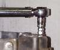
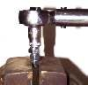
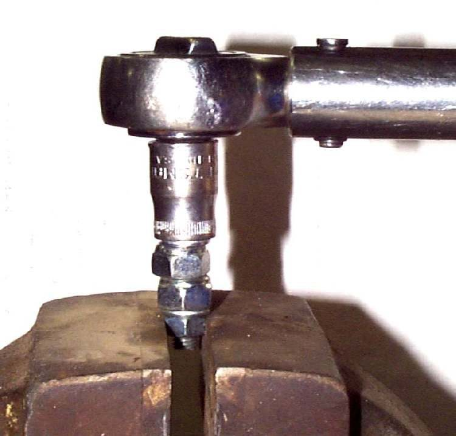

Photo: Dan's Motorcycle Repair Course (dansmc.com), used with permission.
A torque wrench tells the torque but does not teach how it feels. This practice job lets a learner feel the difference between a snug bolt and a bolt that is about to strip, on a scrap part where damage does not matter. After this a rider or trainee tightens fasteners with more care. Use the torque wrench as shown in Use a torque wrench correctly.
Safety
- Wear eye protection. A bolt or nut that breaks can fly off.
- Use a scrap part only. Do not practise on a good engine case.
- Hold the part firmly in a vice or on a bench.
You need
- A scrap crankcase or casting with threaded holes, and a small bolt with a flat washer and nuts.
- A torque wrench and a combination spanner.
- The torque value for that bolt size from a bolt size table or a manual, if available. If no table is at hand, use the lowest setting and increase slowly.
Steps
- Put on eye protection.
- Place a flat washer and a nut or two on a small bolt, then another washer. Screw the bolt into a threaded hole in the scrap casting by hand.
- Set the torque wrench to a low value for that bolt size. Tighten until the wrench clicks or the scale reads the value. Note how little force it takes.
- Loosen the bolt with the spanner. Tighten it again by hand with the spanner only, using the feel you just learned. Check with the torque wrench. Repeat until the feel is close.
- Next, put a steel nut on the test bolt and hold it in a vice. Repeat the tightening in small steps, raising the setting each time.
- Continue until the thread strips or the bolt breaks. Note the feel of the bolt just before it gives. This is the warning that a real bolt is too tight.
- Write down the settings that felt right and the setting where the thread gave way.
Check your work
- You can tighten a small bolt by hand to near the correct torque and confirm it with the wrench.
- You know the feel of a thread about to strip.
What to do on real jobs
- Use the value in your bike's manual for each fastener. Never guess on cylinder head, wheel or brake bolts.
- Small bolts into aluminium strip easily. Stop at the first sign of the bolt stretching or turning with no firm stop.
- If a thread strips on a real part, see Remove a rounded, seized or broken fastener or go to a workshop.